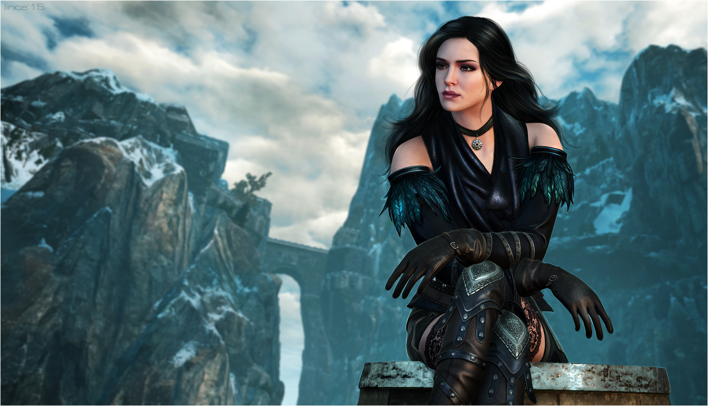
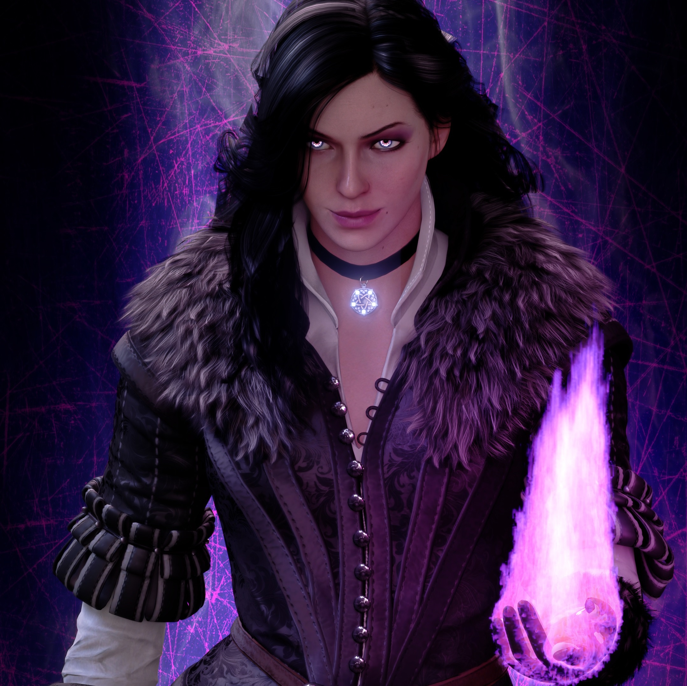

Йеннифер, Йенна или просто Йен (как ее называет Геральт) – маг высшего уровня, член Совета и роскошная женщина, которая сумела покорить сердце ведьмака.
23 мая 1173 года в столице королевства Аэдирн, Венгерберге, в купеческой семье случилось пополнение. Маленькая девочка по имени Йеннифер росла весьма талантливой и демонстрировала незаурядные магические способности. Возможно, причиной этого служили родственные связи с эльфийскими чародейками. Но родители, в венах которых пульсировала аристократическая кровь, так и не смогли принять уродства своей дочери, а именно – отвратительный горб.
Родители Йеннифер не раздумывая согласились отдать девочку на обучение в магическую школу в Аретузе. Для них это было уникальной возможностью избавиться от лишнего «груза» и окончательно перечеркнуть все надежды выдать дочь замуж.
После неудачной попытки Йеннифер покончить с жизнью Тиссая де Врие все же соглашается стать ее наставницей. Именно благодаря своему упорству и помощи Тиссии, Йен удается с помощью магии избавиться от собственного уродства. Девушка расцветает, ее красота разбивает не одно мужское сердце.
После обучения девушка отправилась в путешествие. Она оттачивала свое мастерство, рождала сплетни. Эликсиры позволяли ей сохранять молодость, из-за чего ей давали от силы 25 лет.
Йеннифер страстно желала иметь ребенка из-за чего она меняла мужчин, как перчатки, пытаясь хотя бы на время утолить свою боль и каким-то образом обмануть судьбу. Ее характер становился жестче.
Девушка участвовала в сражении у Содденского холма. В Ривии происходит ее знакомство с Геральтом. Между ними вспыхивает пламя любви.
Желая победить бесплодие она приняла участие в охоте на золотого дракона, но увы, данная компания не увенчалась успехом. Для Цири Йеннифер стала матерью и наставницей.
После интриг совета, в которых девушка отчаянно пыталась спасти Цири, она вошла в состав Ложи. Именно после этого события у неё появилось право голоса в Ложе Чародеек. Но уже после первого заседания была вынуждена вновь бежать.
Йеннифер одновременно очень сильна, цинична, стойкая и женственная, добрая, общительная. Ее характер довольно переменчив и напоминает море, которое в один миг может разбушеваться. Она довольно практична, благодаря чему легко решает поставленные перед собой задачи. Ее можно назвать властолюбивой и эгоистичной в достижении своих целей. Не редко секс в ее руках становится лишь оружием и инструментом.
 Но, тем не менее, ее открытое сердце способно на настоящую и великую любовь. Она очень дружелюбна с друзьями, щедра на комплименты, способна на самопожертвование. Ее душа очень часто страдает, но стойкий характер позволяет удержать все внутри. Поистине выбить её из колеи может лишь близкий человек. Она очень мудра и внимательна, из-за чего не редко оставляет впечатление крайне подозрительной особы.
Её внешность пленила не одно мужское сердце: длинные черные локоны ниже лопаток, идеальная фигура, выразительный взгляд фиалковых глаз, тонкая шея, ровные треугольные черты лица. Йеннифер была невысокого роста. Ее движения, походу можно была прировнять к кошачьей грации.
Её шею украшает магический артефакт в виде звезды. Любимые цвета в одежде – черный и белый. От нее всегда пахнет сиренью и крыжовником.